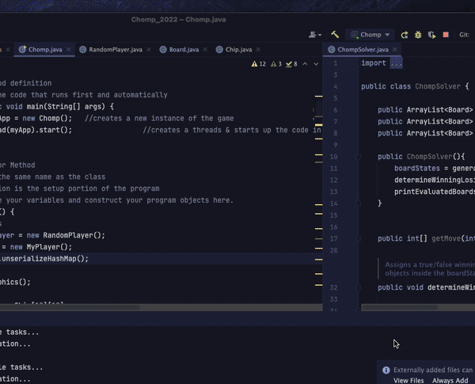

-
First Line of Code
November 2021: Computer Science 1
After being forced to switch half courses, I enrolled into Computer Science 1 at Milton Academy and wrote my first line of code in Java. My only prior experience was through playing with Google's Inspect tool and small middle-school projects on Scratch.
-
Pokemon Odyssey
December 2021: Computer Science 1
For my Computer Science 1 project, I created a Pokemon Battle Simulator. Features include two selectable pokemon (Charizard and Blastoise), a special ability, custom moves, and a full turn-based battle system.
Skills Involved: Java object-oriented programming; Java Graphics2D for rendering; image/GIF manipulation; basic structure and gameflow.

-
Learning Python
December 2021: Personal Endeavor
During December break, I began learning Python using YouTube and CodingBat, a free online resource with numerous introductory Python problems. I completed all the problems on CodingBat and started to work on personal projects.
Skills Involved: Python; string parsing; logic statements and conditionals; lists and dictionaries.

-
Wordle & WordleBot
February 2022: Computer Science 1
I re-created Wordle in Java. Features include ability to change number of guesses or word length, word validation, and improved class structuring.
Then, I created a program called WordleBot that assists with guessing by filtering out specific words based on the information (red, green, yellow).
Skills Involved: String parsing for validation; text-file reading and writing; lambda functions for filtering; Java Graphics2D for rendering

-
K-Means Clustering in New York
March - April 2022: Veritas AI Scholars Program
I completed the 10-week Veritas AI Scholars Program where I got to learn about different machine learning models from working data scientists.
For my capstone project, I analyzed data from New York Traffic Accidents and determined the 10 most densely-packed collision hotspots using K-means clustering. Then, I used the GMAPS Plotter API to plot a map of every single accident and the notable hotspots, with each color representing a different borough.
Skills Involved: Python; numpy and pandas; matplotlib; sklearn K-Means clustering; Google Maps Plotter API.

-
Milton Academy Diversity Map
July 2022: Personal Endeavor
I scraped data from the MyMilton Student Directory to obtain student addresses and plot a map of student locations. First, I used Selenium, a popular web-scraping library, to log into MyMilton and obtain student locations from the directory. Then, I stripped any identifying information and converted all locations to coordinates so that I could plot it using the GMAPs Plotter API.
Skills Involved: Selenium library for web-scraping; Nominatim API for geocoding; Google Maps Plotter API; HTML parsing and table filtering.

-
Milton Academy Calendar Integration
July 2022: Personal Endeavor
I used Selenium to log into MyMilton, obtain my schedule, and upload all my classes to Google Calendar using their API.
This project was one of the hardest projects I completed, but I learned a lot about parsing HTML tables and working with APIs.
Skills Involved: Selenium library for web-scraping; Google Calender API for events; Python's datetime module for time; in-depth HTML table parsing.


-
Spotify Analyzer
August 2022: Personal Endeavor
I used Spotipy, a popular wrapper for Spotify's API, to log into my Spotify account and collected data on my Liked Songs.
On the left, I created a program that creates playlists with all the songs I had liked for a particular month.
On the right, I analyzed the release dates of all my Liked Songs and plotted them on a graph using matplotlib. Interestingly, Spotify doesn't store individual song release dates, but rather album release dates.
Skills Involved: Spotify API; matplotlib; JSON parsing.


-
Milton Academy Face Guessing Game
October 2022: Personal Endeavor
I scraped data from the MyMilton Student Directory to obtain student faces and create a face guessing game for students and teachers.
Click here to navigate to the website.
Skills Involved: Selenium library for web-scraping; JSON reading/writing to store data; HTML and CSS for website frontend; JavaScript for backend quiz
-
Graphing Calculator
November 2022: Advanced Functions w/ Computer Science
I programmed a graphing calculator that can plot points, graph multiple lines, and find the line of best fit for a data set. The program utilizes a Java library called mXparser to parse through user-inputted math equations.
Skills Involved: Java's Swing library and layout managing; mXparser library for equation parsing; conversions from graph coordinates to screen coordinates.
-
Chomp
November 2022: Computer Science 2
I coded a program that can play the game of Chomp and consistently pick the winning move. Instead of recalculating winning and losing boards on every load, I ran my program once and serialized a HashMap containing all winning combos to achieve an O(1) solution.
Skills Involved: Pure logic; Java ArrayLists and HashMaps for storing winning/losing boards; O(n) notation for time complexity.
 -
MANIM Library
November 2022: Personal Endeavor
I used MANIM, the Python animation library used by YouTuber 3Blue1Brown, to create a short animation about finding the line of best fit (iterative linear regression).
Skills Involved: MANIM library for math animations; Python knowledge; LATEX math formatting.

-
iMessage NLTK Sentiment Analysis
December 2022: Personal Endeavor
I scraped the iMessage chat databases on my computer to perform NLTK sentiment analysis and count word frequencies.
On the left, I used a pre-trained NLTK (natural language toolkit) model to determine how positive/negative my texts were with my sister.
On the right, I counted raw word frequencies by month.
Skills Involved: NLTK library for natural language processing; py-iMessage library for collecting local iMessage texts; matplotlib for graphing.


-
bryansukidi.com
December 2022: Personal Endeavor
I coded a personal website using HTML, CSS, and JS, hosted using GitHub pages.
The website source code can be found on my GitHub.
Skills Involved: HTML and CSS for frontend design; JavaScript for backend and animations; IntersectionObserver for viewport-based animations.